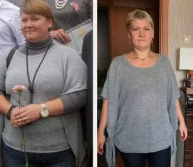
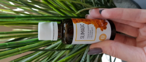
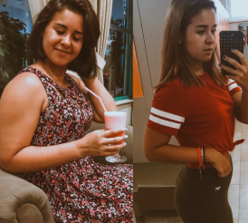

Mi gran logro personal
Bueno... cómo empezar...
Primero, os agradezco mucho por vuestro soporte, los cumplidos y por vuestras palabras tan cariñosas. Me encantaron... (creo que no lo merezco)
Y para los que acaban de unirse, me llamo María y es mi blog sobre cómo adelgacé
¡Vamos a empezar! ¡Todo el proceso de adelgazar en un solo año!
De 120 kg a 75 kg, y no pienso parar, quiero adelgazar unos 15 kilos
Para los interesados - estatura 177, edad 33, móvil +7996.. (Es una broma)
Mi historia personal: de niña era muy alta y mi madre me matriculó en las clases de basketball, todo iba bien y ni siquiera pensaba de ninguna carrera seria, pero se produjo una tragedia y mi entrenador querido murió. Lo cual me afectó mucho, no quería jugar a nada nunca más, no podía ver la pelota. Empecé a comer bastante, mi peso empezó a subir .
No volví a jugar a basketball. No tenía amigos en el colegio, y en general me motejaban por mi estatura, era mucho más alta que todas las demás chicas, sin hablar de los chicos... Y a los 13 años de edad ya pesaba 80 kg., pero eso no me molestaba en aquel momento. Iba al cole, volvía y comía, comía... Los padres intentaban ayudarme, sin éxito.
Pasaron unos 5 años y estoy aquí una vaca triste de 110 kg y lloro porque nadie me quiere, no tengo amigos ni una afición... Se reían de mí... Frecuentemente me llamaban vaca, gorda etc. Ya no me molestaba, estaba acostumbrada...
Pasaron 10 años más, encontré un buen trabajo... lo típico, pero tenía un SUEÑO...de encontrar un hombre que me pudiera querer tal y como estaba, y para él sería la mejor, la más guapa etc..
Y eso que tenía 28 años (era tonta)))
Pero por alguna razón no le encontraba, es curioso, ¿verdad? Pero encontré a una amiga, la que más necesitaba, bastante directa ye implacable, pero al mismo tiempo dispuesta a ayudar.
Y me ayudó a razonar bien, si quieres marido y niños; debes trabajar para ser mejor!!!! Porque:
- ¡es tu salud!
- ¡es tu vida!
- ¿te da miedo correo en un estadio? - pero ¿no te da miedo ser gorda?
- ¡vete a hacer abdominales!
¡Y decidí hacerlo!

En estas fotos, unos 120 kg...
Los primeros 5 kg los perdí en casa, al hacer sentadillas 10 veces, al hacer abdominales (como podía), el límite de 10 segundos era un logro..
y sin comer después de las 18:00
Al excluir pan, mantequilla, pasta, galletas, empanadas, azúcar, permitiéndolo para el desayuno)
Luego empecé a correr... Sé que con este peso puedo dañar las articulaciones, pero me decidí.. Es difícil llamarlo «correr». Caminaba rápidamente por el estadio, de vez en cuando corría unos 15 metros. Pero en aquel momento era un nivel para mí.. Poco a poco intentaba correr un poco más..
Me dolían las piernas... Después de cada ejercicio, dolían mucho... después de cada esfuerzo me dolía todo el cuerpo... Siempre 2 veces a la semana los primeros 10 kg a veces tenía ataques de nervios por dolor en los músculos y por hambre que tenía...
Lloraba sollozando, decía que lo iba a dejar todo... Llorando, iba al estadio... Corría y lloraba..
Mi amiga en aquellos momentos siempre estaba en contacto y me decía por teléfono que yo era la más guapa, que ya había hecho mucho y que ya no podía parar... En general, me soportaba mucho, completamente... Y mis histerias cambiaban por un enojo, que soy una histérica sin carácter, y yo iba a hacer abdominales.. Con rabia y persistencia;)
Medio año más tarde perdí 20 kg, empecé a caber en la bañera y entendí que los dolores de músculos se quitan con el agua caliente...
¡Y en aquel momento me sentí más segura! Empece a ir al gimnasio, todo iba bien, el peso se quitaba poco a poco, casi me acostumbré a no comer nada... Pero de repente el peso se paró... Tuve un pánico. Por supuesto, empecé a entrenarme aún más, a torturarme con dietas y hambre... Pero nada ayudaba. Un día horrible decidí ver mi peso y HORROR +4 KG(((
Tuve una depresión, después del trabajo tan duro, y nada funcionó... Lo dejé todo otra vez, me quedé en casa y empecé a comer. Por supuesto, mi peso volvió a subir, pero ya no me importaba, ya decidí acabar con todo, con mis sueños y planes. ¡¡¡Yo, pero mi amiga no, por lo cual le estoy muy agradecida!!!
¡La que empezó a buscar modos de adelgazar alternativos fue ella, no yo! A mi me daba igual... Ella veía programas de la tele, leía los artículos, libros y en general todo lo que podía encontrar. Y me traía el material ya procesado, pero yo lo rechazaba todo... Y un mes más tarde la amiga entró corriendo en mi casa y gritó: «¡He encontrado lo que necesitas!» y me enseñó un artículo de una revista norteamericana donde se trataba del fármaco Slimagic . No confíe en eso porque no creía que se pudiera adelgazar de este modo, porque todos siempre dicen que para adelgazar uno debe probar dietas y entrenarse mucho, y para los ricos y atrevidos es una intervención quirúrgica... pero leí el artículo, en breve se trata de eso: Slimagic - es un remedio único para quitar el peso basado en propóleos. Permite quitar la grasa rápidamente para tener un cuerpo esbelto sin dietas ni entrenamientos agobiantes.
Lo disuelven en un vaso de agua y lo toman unos 20 minutos antes de desayunar. Lo mismo por la noche. Y en un solo mes se puede perder hasta 30 kg .
Parece un cuento chino, ¿verdad? Poro no podía rechazarlo, si no por mí misma, por lo menos, por mi amiga que intentaba tanto ayudarme: no tenía nada que perder además del peso. )))
Empezamos a buscar este remedio en Grecia, resultó que Slimagic fue sometido a todas las pruebas clínicas, fue patentado y hay un sitio web oficial para comprarlo por precio muy económico. Imagino cuánto valdría en farmacia, sobre todo si tomamos en cuenta que es completamente natural... Pedí un curso y a partir de aquel momento empezó mi NUEVA VIDA

Así fue:
Primer día
Por la mañana tomé 12 gotas con un baso de agua, 20 minutos antes de desayunar, desayuno normal. Por la noche repetí lo mismo.
Segundo día
Lo mismo que el primero. Ningún cambio
Tercer día
Al tercer día noté que tengo menos apetito, y tres veces más energía
Séptimo día
Decidí comprobar mi peso y flipé: -4 kg. Solo porque tomaba las gotas
No voy a describir todos los días, lo voy a resumir
El día 1 tuve - 10 cm en la cintura ¡¡¡El día 21 la bascula marcaba - 15 kg WOW!!! Conseguí este resultado con dietas y entrenamiento en casi medio año. ¡¡¡En general, durante el primer mes con Slimagic perdí 21 kg!!! ¡Podéis creerme, y tampoco me lo creía, pero es realmente así!
Decidí no parar, continué tomándolo y, tres meses más tarde, de 140 kg conseguí adelgazar hasta 80 kg, y quedaban 15 más)))
Y os voy a revelar un secreto: “ ¡Encontré a mi Príncipe!)”


Comentarios
María, perfecto, estoy muy contenta por ti, tu amiga es un tesoro. Si yo tuviera una amiga así, pero me has dado una esperanza y creo que todo es posible. Pediré sin falta Slimagic
ContestarAna, muchas gracias. Se lo diré sin falta.
ContestarDecidí probar una dieta de melocotón, conseguí perder -4kg, luego mi peso paró también y no bajaba en toda la semana, pedí este fármaco, me lo trajeron en 4 día directamente a mi casa con un mensajero, ya llevo 5 días y en este periodo perdí -4 кг, y espero que el peso no se estanque
ContestarZara, no no va a estancarse, solo seguirá bajando, créeme)
ContestarTengo casi 42 años, pero después de adelgazar parezco unos 5 años más joven, sobre todo por el cutis perfecto que tengo ahora, creo que la ausencia de efectos secundarios es una ventaja.
 ContestarMe dejó mi novio, sigo queriéndole, me llenaba con pizza y fastfood y ahora tengo culo muy grande, no les gusto a sus amigos y me decían que soy gorda, decidí ir al gimnasio, pero mi peso no bajó, vi una publicidad y pedí este remedio, total, un mes más tarde mi ex me vio y dijo que estoy muy delgada, ahora otra vez estamos juntos
comparado con cualquier fármaco existente, este funcionó en mi caso, de momento -3 kg en una semana, aquí hablan de mejores resultados, pero no me desespero, aún así peso poco
Contestar¡Ni siquiera tuve que cambiar mi modo de vivir habitual! Normalmente para adelgazar uno debe estar a dieta, y demás ir al gimnasio, y aquí sin mucho esfuerzo, gracias al conjunto bien pensado de elementos naturales, ya 3 semanas más tarde parezco más sexy y he consumido muchas vitaminas para mi cuerpo.
 ContestarYo también decidí Probar este remedio . Es lo que me pasó en un 1 mes: - 12 kg de peso y - 10 cm en la cintura. Por eso, si uno desea adelgazar rápido, Slimagic es lo que necesita
 Contestar¡Chicas, lo recomiendo! Quema la grasa perfectamente . No solo ayuda a adelgazar, sino también al perder el peso aporta vitaminas y minerales al cuerpo. Lo cual significa que fortalece el pelo y las uñas, mejora la inmunidad. Me alegro mucho: gracias al complejo perdí 3 kg en una semana y tuve una fuente de energía.
Contestar¿Y alguien sabe si hay certificados de calidad para este remedio y si tiene capacidades no solo de quemar la grasa, sino de rejuvenecer el cuerpo? ¿Y es verdad que uno queda esbelto ya 2-3 semanas más tarde? ¿Y cómo influye el fármaco en el sistema nervioso? Tengo tantas preguntas, os pido disculpas, pero es muy importante para mí.
ContestarAmalia, hay certificados, seguro. En cuanto a todas las demás preguntas, solo puedo decir por mi experiencia, el fármaco no influye mal en el sistema nervioso, sino al revés, estoy de buen humor, tengo muchas fuerzas y energía, tengo cuerpo bonito, se ve en la foto. Y te recomiendo entrar en el sitio web oficial dejar una solicitud, te llamará un manager y contestará a todas las preguntas.
ContestarSoy nutricionista y confirmo que el conjunto funciona de forma eficaz, contiene solo componentes naturales, no tiene sustancias nocivas que frecuentemente provocan alergia y problemas de estómago. Y en general Slimagic es el quemador de grasa más popular del año 2019, mejora el funcionamiento del sistema digestivo y la función metabólica. Un extracto de aceite de cedro y los aceites de té en el conjunto mejoran el funcionamiento del sistema nervioso central, mejoran la estructura del pelo y de la piel, limpian el cutis (quitan los granos), quitan las reservas de grasa acumulada. Solo es importante aplicar correctamente el quemador de grasa, no bajar ni reducir la dosis y entonces en poco tiempo perderás 10-15 kg .
ContestarY ¿cómo se hace el pago? ¿No provoca alergias? Es muy importante para mí, lo último. He leído que el remedio ayuda también a mejorar el estado general del cuerpo. ¿Es verdad?
ContestarNatalia, el quemador de grasa funciona perfectamente. Los fármacos más publicitados no funcionan tan bien como éste. Pero debes tomarlo respetando las instrucciones de uso, y tendrás resultado ya en una semana. Pague en efectivo al mensajero
Contestar